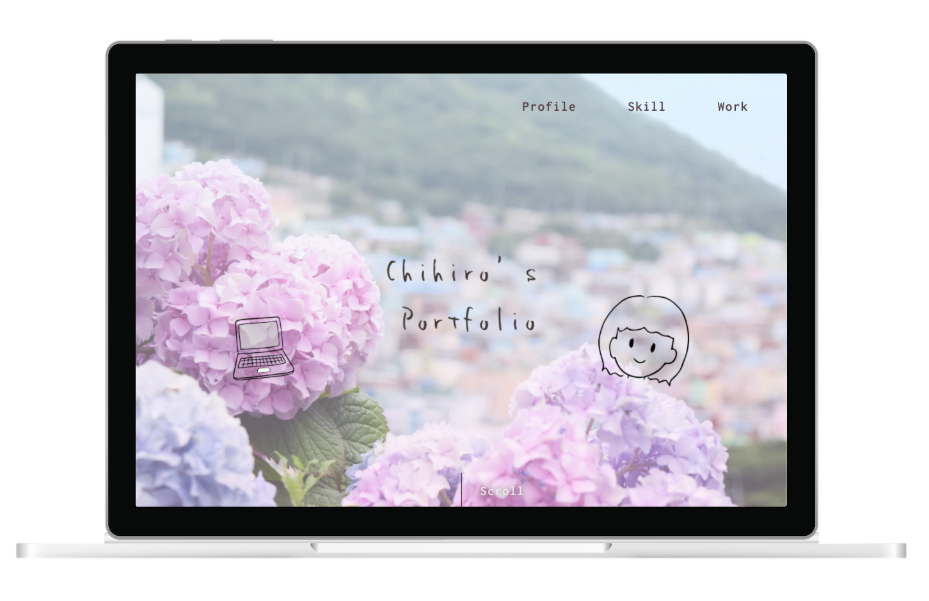
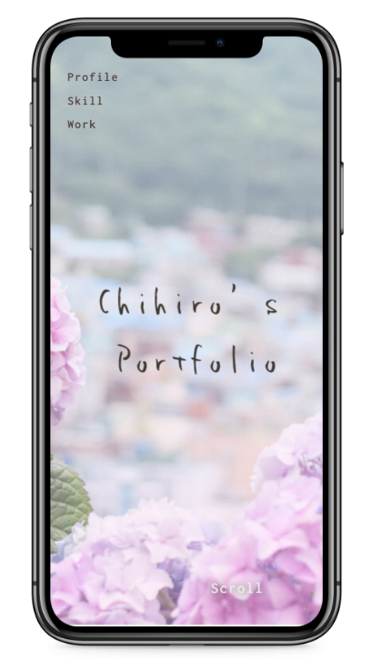

<!DOCTYPE html>
<html lang="ja">
<head>
    <meta charset="UTF-8">
    <meta http-equiv="X-UA-Compatible" content="IE=edge">
    <meta name="viewport" content="width=device-width, initial-scale=1.0">
    <title>Chihiro's Portfolio</title>
    <link rel="shortcut icon" href="img/C-icon.svg"  type="image/svg+xml">
    <link rel="preconnect" href="https://fonts.googleapis.com">
    <link rel="preconnect" href="https://fonts.gstatic.com" crossorigin>
    <link href="https://fonts.googleapis.com/css2?family=Inconsolata:wght@500&family=Noto+Sans+JP:wght@100&family=Poppins:wght@100;200&family=Shippori+Mincho&display=swap" rel="stylesheet">
    <link rel="stylesheet" href="portfolio.css">
</head>
<body id="portfoliosite" class="portfolio-body portfolio-webdesign-body">
    <header>
        <div class="nav-wrapper">
            <nav class="header-nav">
                <ul class="nav-list">
                    <li class="nav-item"><a href="index.html#index">Top</a></li>
                    <li class="nav-item"><a href="index.html#profile">Profile</a></li>
                    <li class="nav-item"><a href="index.html#skill">Skill</a></li>
                    <li class="nav-item"><a href="index.html#work">Work</a></li>
                </ul>
            </nav>
        </div>
        <!--ハンバーガーメニュー-->
        <div class="bar_nav-wrapper">
            <nav class="bar_header-nav">
                <ul class="bar_nav-list">
                    <li class="bar_nav-item"><a href="index.html">Home</a></li>
                    <li class="bar_nav-item"><a href="index.html#profile">Profile</a></li>
                    <li class="bar_nav-item"><a href="index.html#skill">Skill</a></li>
                    <li class="bar_nav-item">
                        <a class="bar_nav-item-work-parent" href="index.html#work">Work</a>
                        <dl>
                            <dt><a class="bar_nav-item-work-child" href="index.html#webdesign">- Web Design -</a></dt>
                                <dd ><a class="bar_nav-item-work-child-child" href="portfolio-webdojo.html">Web school site</a></dd>
                                <dd ><a class="bar_nav-item-work-child-child" href="portfolio-portfoliosite.html">portfolio site</a></dd>
                                <dd ><a class="bar_nav-item-work-child-child" href="tatamistore.html">Tatami store site</a></dd>
                        
                            <dt><a class="bar_nav-item-work-child" href="index.html#graphicdesign">- Graphic Design -</a></dt>
                                <dd><a class="bar_nav-item-work-child-child" href="portfolio-businesscard.html">Businesscard</a></dd>
                                <dd><a class="bar_nav-item-work-child-child" href="portfolio-postcard.html">Postcard</a></dd>
                                <dd><a class="bar_nav-item-work-child-child" href="portfolio-package.html">Package</a></dd>
                                <dd><a class="bar_nav-item-work-child-child" href="portfolio-flyer.html">Flyer</a></dd>
                        </dl>
                    </li>
                
        </div>
         <!--  /ナビ表示時 ナビの外をクリックしたら閉じるようにする用 -->
          <span class="nav_bg"></span>
        <div class="burger-wrapper">
            <div class="burger-btn">
                <span class="bars">
                    <span class="bar bar-top"></span>
                    <span class="bar bar-mid"></span>
                    <span class="bar bar-bottom"></span>
                </span>
            </div>
        </div>
    </header>
    <main>
        <h2 class="category">Web design</h2>
        <h3>自身のポートフォリオサイト</h3>
        <p class="main-image wrapper-main-image-portfoliosite">
            
            
        </p>
        <a href="index.html"><p class="link-site-before-content">サイトを見る</p>
        <div class="portfolio-content-wrapper">
            <p class="intro-sentence alignCenter">自身のポートフォリオサイトを企画・制作しました。
            </p>
                <div class="portfolio-content">
                 
                    <h4>目的</h4>
                        <p class="alignCenter">自身の人柄やプロフィールなどの情報、現在のデザインスキルを知っていただく</p>

                    <h4>制作ポイント</h4>
                        <h5>メインビジュアル</h5>
                            <p>自身で撮影した写真に、描いたイラストを配置し、オリジナル要素を盛り込みました。
                                タイトルは手書きのようなフォントを使用し、ぬくもりのある雰囲気にしました。</p>
                        <h5>色</h5>
                        <p>メインビジュアルの写真に使われている色でもある、紫色、緑色をメインに使い、落ち着いて深みを感じるような印象にしました。</p>
                        <h5>その他工夫</h5>
                            <p>
                                スクロールすると右上に３本線のメニューボタンが表示されるようにし、見たいページや箇所に用意にアクセスできるようにしました。
                                また、サイトに繋がるリンクボタンに様々な動きや効果を入れており、見る方が飽きずに楽しめるよう工夫しました。
                                 </p>
                    <h4>制作期間</h4>
                            <p>17日間　(2021年5月)</p>
                    <h4>作業範囲</h4>
                            <p>企画・カンプ作成・コーディング（HTML・CSS・JavaScript）</p>
                    <h4>使用ソフト</h4>
                            <p>illustratorCC2020(カンプ作成), PhotoshopCC2020(画像編集), Visual Studio Code </p>
                            
                    
                           <a href="https://jcgjgh5qh5-code.github.io/sample-webdojo/"> 
                            <div class="link-site-after-content">サイトを見る</div>
                        </a>
        </div>
         <!--上に戻るボタン-->
         <p class="link-top-btn"></p>
    </main>
    
    <footer>
        <div class="footer-contact">
            <p>Murata Chihiro</p>
            <p class="footer-email">chiiro052@icloud.com</p>
        </div>
        <p class="copyright"><small>&copy;Murata Chihiro</small></p>
    </footer>
    <script type="text/javascript" src="http://ajax.googleapis.com/ajax/libs/jquery/1.9.1/jquery.min.js"></script>
    <script type="text/javascript" src="script.js"></script></footer>
</body>
</html>